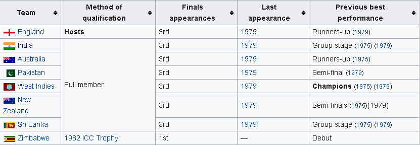

Semi-finals
In the first semi-final, at Old Trafford on 22 June, England won the toss and elected to Bat. The English batsmen mistimed many balls and used the bat's edge frequently, as the restrictive Indian bowling led England to score 213 (all out, 60 overs). Graeme Fowler (33 from 59 balls, 3 fours) top scored, and Kapil Dev took 3 for 35 in eleven overs, with Mohinder Amarnath and Roger Binny taking two wickets each. In reply, Yashpal Sharma (61 from 115 balls, 3 fours, 2 sixes) and Sandeep Patil (51 from 32 balls, 8 fours) made half-centuries, as India reached their target in 54.4 overs, winning by 6 wickets in a classic victory over the previous tournament's runners-up. Mohinder Amarnath (46 from 92 balls, 4 fours, 1 six) picked up the man-of-the-match award for his all round performance, which saw him add 46 runs to his earlier bowling success (2/27 in 12 overs).
Final
In the final, India lost the toss and were asked to bat first against a West Indies team that arguably boasted the world's best bowling attack[citation needed]. Only Krishnamachari Srikkanth (38 from 57 balls) and Mohinder Amarnath (26 from 80 balls) put up any significant resistance as Roberts, Marshall, Joel Garner and Michael Holding ripped through the Indian batsmen, ably supported by Gomes. Surprising resistance by the tail allowed India to compile 183 (all out, 54.4 overs). When Indian chips were down Kapil Dev said "team if this is not a winning total its definitely a fighting total" One of the popular quotes of all time. However, the Indian bowling exploited the weather and pitch conditions perfectly to bowl out the best batting lineup of the era for 140 from 52 overs in return, winning by 43 runs and completing one of the most stunning upsets in cricket history. Amarnath and Madan Lal each took three wickets, and one memorable moment was the sight of Kapil Dev running about 20 yards (18 m) to take a catch to dismiss Richards, the West Indies' top scorer with 33 from 28 balls. Amarnath was the most economical bowler, conceding just 12 runs from his seven overs, while taking 3 wickets, and was once again awarded the Man of the Match award for his all-round performance.[3] There was no 'Man of the Series' awarded in 1983.
1983-worldcup
Abou cup
The 1983 Cricket World Cup (officially the Prudential Cup '83) was the 3rd edition of the Cricket World Cup tournament. It was held from 9 June to 25 June 1983 in England and Wales and was won by India. Eight countries participated in the event. The 1983 World Cup was full of dramatic cricket all through the tournament. Teams like India and Zimbabwe who were not playing well during those times scored upset victories over the West Indies and Australia respectively. England, Pakistan, India and tournament favourites West Indies qualified for the semi-finals. The preliminary matches were played in two groups of four teams each, and each country played the others in its group twice. The top two teams in each group qualified for the semi-finals. The matches consisted of 60 overs per innings and were played in traditional white clothing and with red balls. They were all played during the day.
Format
The format of the 1983 World Cup was 2 groups of four teams, each team playing each other twice. The top two teams from each group then advanced to the semi finals with the winners further advancing to the finals. Every game was of 60 overs with all day matches.
Participants
The following 8 teams qualified for the final tournament (7 full ICC members including recently appointed full member Sri Lanka and Zimbabwe who qualified by winning the 1982 ICC Trophy).
Venues